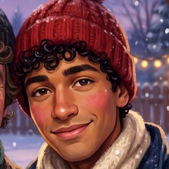
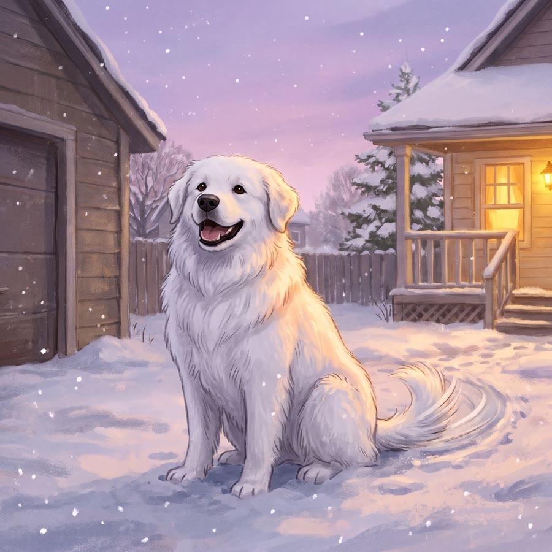

Backyard Basketball
Clara 0 · Uncle Joe 0
Uncle Joe

Backyard Basketball with Uncle Joe
It is nine o'clock on a snowy night. Uncle Joe says yes to one more game, the porch light is on, and Bernie is ready to supervise.
How to play
- Left and right arrows aim the shot higher or lower.
- Hold the space bar (or the Hold to shoot button) to build power, then let go to shoot.
- You and Uncle Joe take turns. First to 7 baskets.
- Any shot that comes close still counts. Bernie may steal the ball now and then.
Uncle Joe's lines are written for the game, not from the show. His voice is AI-generated.
Good game!
Settings
Look
Text size
Shot helper (shows where the ball will go)
How close counts
Music
Sounds
Uncle Joe's voice
Sound captions
Calm motion (no falling snow)